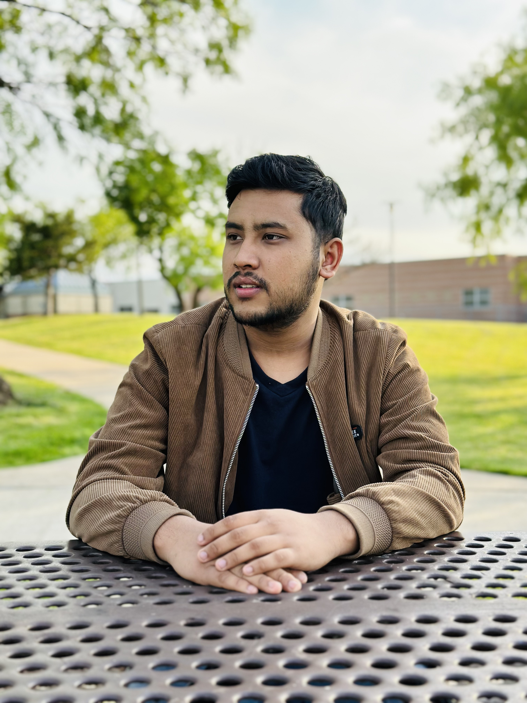

MILAN SUNAR

OBJECTIVE:
- Computer Science junior with intermediate web development skills, seeking a summer Web
Developer Internship.
- Proficient in HTML, CSS; some experience building responsive, interactive websites.
- Eager to contribute to a team and expand my skills in front-end and back-end development.
TECHNICAL SKILLS
- Language: c++, Java, Html, CSS
- Applications: MS Visual Studio, Eclipse, GitHub, Git
- Operating Systems: Windows
- Certifications: Coursera Introduction to html, CSS and JavaScript
EDUCATION
- 2024-2026 - Bachelor of Science in computer science
- 2021-2023 - Associate in Bachelor of Science (GPA-3.74)
- 2018-2020 - High School in Science stream (GPA- 3.71)
RELEVENT PROJECTS
Maze Game (C Language)
- Developed a maze game in C as part of a junior year group project, implementing file handling.
- Ensured smooth gameplay mechanics and effective user interaction.
- Collaborated closely with team members for seamless execution.
Employee Pay Slip Calculator (C++)
- Wrote C++ code in a team to automate salary calculations and deductions by reading input files.
- Utilized file handling to efficiently process and store employee data.
- Collaborated to ensure accurate and streamlined pay slip generation.
PROFESSIONAL EXPERIENCE
Strong written and verbal communication skills, including the ability to provide constructive feedback and collaborate effectively with writers, editors, and other stakeholders.